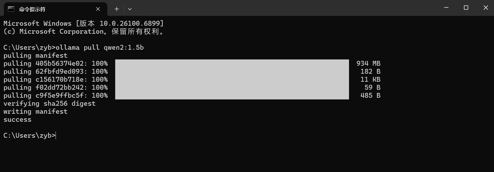
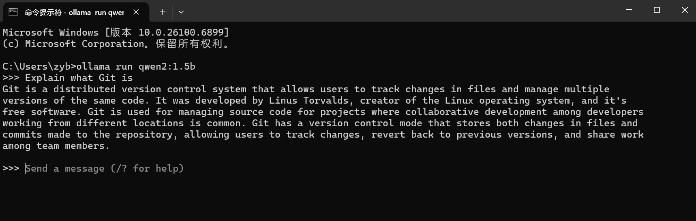
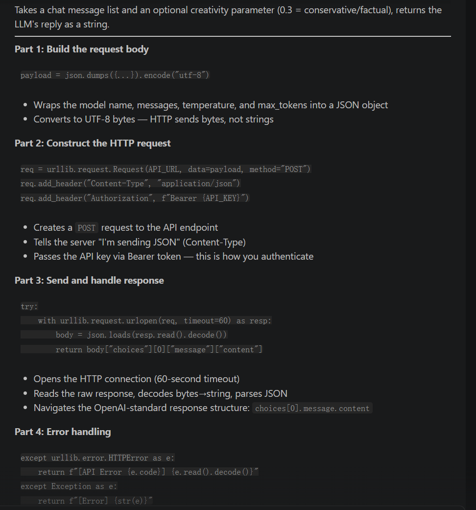

Assignment 3 · AI Agents Report
I obtained an API key for DeepSeek (deepseek-chat model), an OpenAI-compatible online LLM service.
The API endpoint follows the standard /v1/chat/completions format, making it compatible with any OpenAI-style client.
I created a Python script (online_agent.py) that supports two modes:
# Analyze a file
python online_agent.py --file report.md --question "What is this report about?"
# General knowledge question
python online_agent.py --question "Explain the difference between Git merge and rebase"urllib to avoid external dependencies
I installed Ollama (version 0.24.0) on Windows 11 via the winget package manager:
winget install Ollama.OllamaAfter installation, the Ollama service starts automatically in the background.
Successfully pulled Qwen2:1.5B, a lightweight open-source model, after resolving network issues:
ollama pull qwen2:1.5b
ollama run qwen2:1.5b
Figure 1 - Downloading Qwen2:1.5B model via Ollama
The model download from registry.ollama.ai initially timed out due to network restrictions in China.
The registry domain resolved to an IPv6 address that was unreachable from the local network environment.
Solution: Enabled VPN TUN mode (Clash), which routes all system traffic through the proxy — including CLI tools like Ollama. The download then completed successfully.
This was a real-world lesson in network infrastructure — understanding the difference between System Proxy mode (browsers only) and TUN mode (all traffic) was key to resolving the issue.

Figure 2 - Interactive Q&A session with the local Qwen2:1.5B model
I integrated Claude Code (Anthropic's AI coding assistant) into Visual Studio Code
via the official extension (anthropic.claude-code). Capabilities include:
Used Claude Code to explain the call_llm function in my online agent script. The AI broke down:
urllib.request.Request
Figure 3 - Claude Code explaining the call_llm function in VSCode
Used Claude Code to redesign my blog website. The assistant:
Throughout this assignment, Claude Code acted as a code explainer, design assistant, documentation helper, and deployment assistant — managing the full development lifecycle from code to deployment.
| Aspect | Online Model (DeepSeek) | Local Model (Ollama) |
|---|---|---|
| Response Speed | Fast (~2–3s) | Hardware-dependent |
| Accuracy | High (large models) | Moderate (smaller models) |
| Setup Difficulty | Easy (API key only) | Medium (install + network) |
| Internet Required | Yes | Only for initial download |
| Cost | Pay-per-token | Free |
| Privacy | Data sent to cloud | Fully local |
| Network Dependency | Must access API endpoint | Must access model registry |
Challenge 1 — API Key Security: Initially hardcoded the API key in the script.
Solution: Refactored to use environment variables for secure credential management.
Challenge 2 — Ollama Model Download: Official model registry was inaccessible due to China network restrictions.
Solution: Switched VPN to TUN mode, routing all system traffic through the proxy — download completed successfully.
Challenge 3 — Ollama Storage Migration: Default model storage was on C drive (limited SSD space).
Solution: Set OLLAMA_MODELS environment variable to D drive, migrated 892MB of model files, freed C drive space.
This assignment gave me practical experience with three tiers of AI agent deployment:
The key takeaway: these three tiers are complementary. A well-rounded developer should know when to use each one based on task requirements, privacy constraints, and available infrastructure.